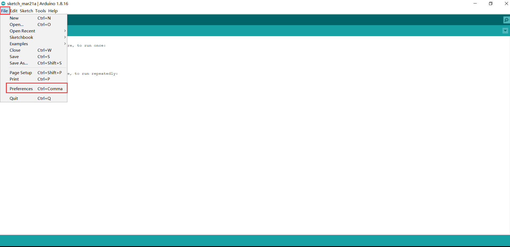
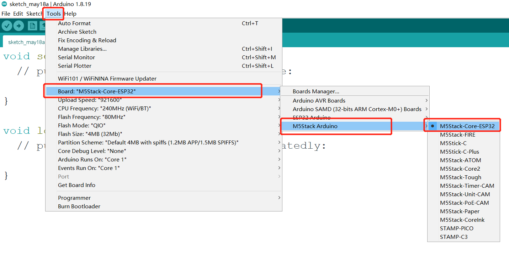
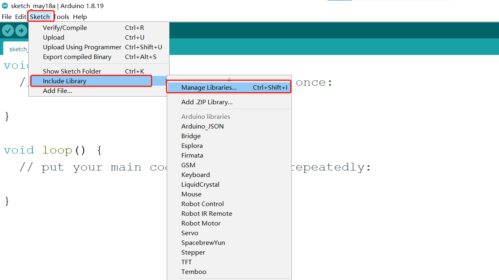
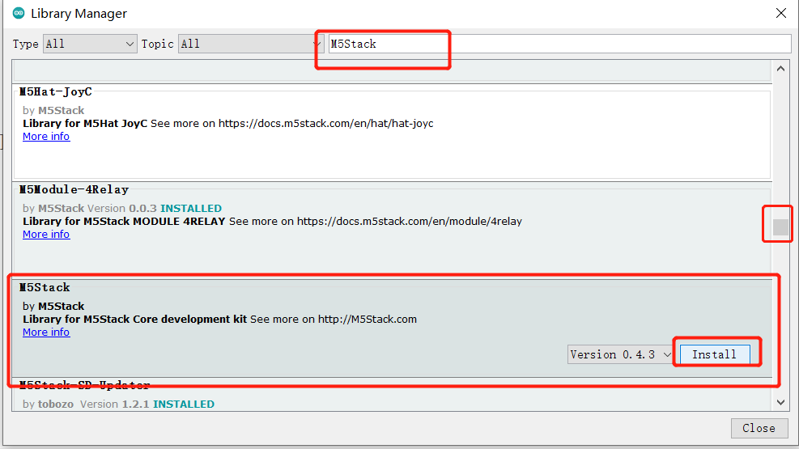

Arduino environment setup
Arduino IDE download

Download Arduino IDE You can click Arduino official website to download and install the version corresponding to the computer system.
Install the driver
Before burning the program, users of M5Core host (including BASIC/GRAY/M5GO/FIRE/FACES)/ microcontroller devices please click the button below to download the corresponding CP210X driver package according to your operating system. After decompressing the package, select the installation package corresponding to the operating system bit number to install.
For Mac OS, before installing, make sure System Preferences-->Security & Privacy-->General and allow CP2104 drivers to be downloaded from the App Store and approved developers
After unzipping the compressed package, select the corresponding installation package according to the operating system of the computer for installation (select x64 or x86 for win10 and win11).

CP34X
-
Add development board
Open Arduino IDE, select File --> Preferences --> Settings, add the URL below to the additional development board manager https://m5stack.oss-cn-shenzhen.aliyuncs.com/resource/arduino/package_m5stack_index.json 

After adding, select Tools --> Development Edition --> Development Board Manager, enter and search M5Stack in the new pop-up dialog box, and click Install (if the search fails, you can try restarting the Arduino program; if an error occurs during downloading, click Install again), as shown below:

After adding, select Tools --> Development Board , check if it is successful, as shown below:

Add related libraries
4.1 Install M5Stack library
Tools --> Development Board --> M5Stack Arduino Select M5Stack-Core-ESP32, as shown below:
Project --> Load Library --> Manage Library Enter M5Stack in the search box, as shown in the following figure:
Click Install after finding it, scroll down, M5Stack is at the back, and you can see the location of the drop-down slider in the picture, as shown in the following figure:

4.2 Install MyCobotBasic library
Note: Please download the latest library, the first version is v0.0.1.
- Click to download related dependency libraries
MycobotBasic(After importing the Mycobot280-Arduino model, you can refer to 10.3-arduinolib_use for use). Please see the figure below for details. .zip is suitable for Windows system, and .tar.gz is suitable for Linux system:

Dependent library installation instructions
First check the location of the Arduino project folder. You can view it by clicking File --> Preferences (you can copy the path to the hard disk path to find the libraries folder)


1 Copy the path here and press enter to find the libraries folder
Unzip to the corresponding folder libraries directory. If you are using Arduino, please do not overwrite, just add it to the existing Library.

At this point, congratulations, you have built the Arduino related development environment.
Note: For Arduino environment configuration and case compilation, you can watch our video on Bilibili (https://www.bilibili.com/video/BV1Vi4y1c7DQ/).